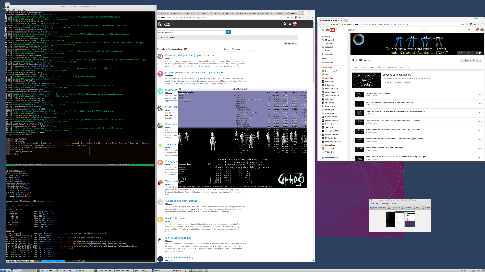

bmcorser

There don’t seem to be textures in this sample (see above) on a fresh build of 48a1f3dcddb4e5a29006b2264d29e7e8b9be4725
Are there some issues with high DPI? I managed to build and run samples on OSX, but that was Urho3D 1.5 I think.
Is there anything I can look at to debug?
Cheers,
Ben